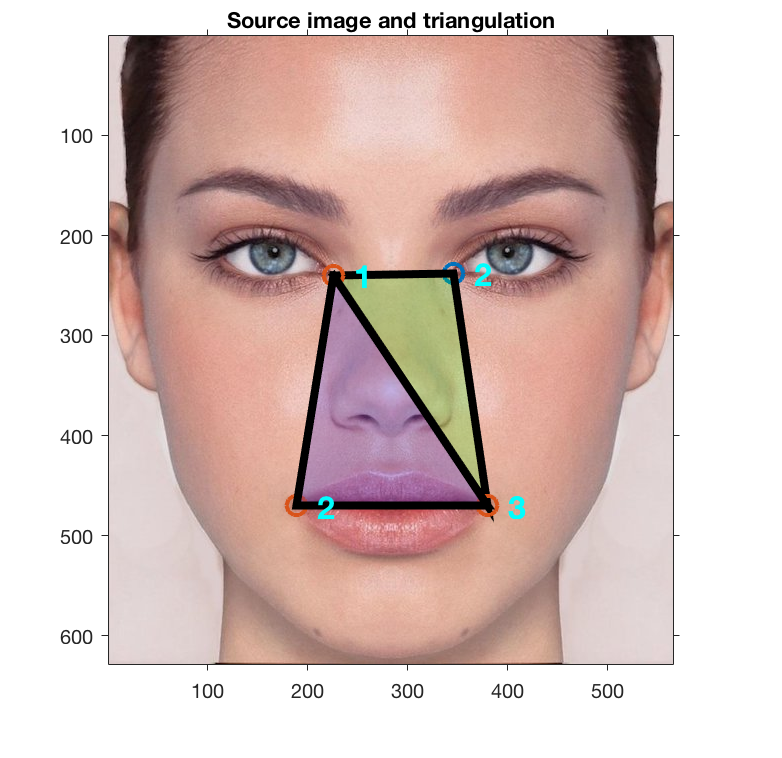
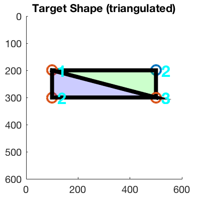
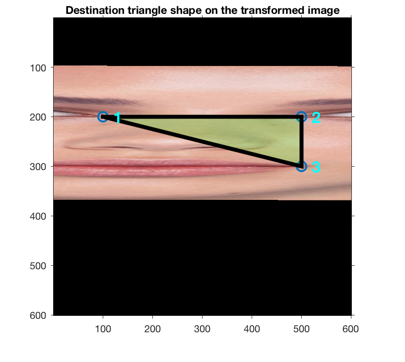
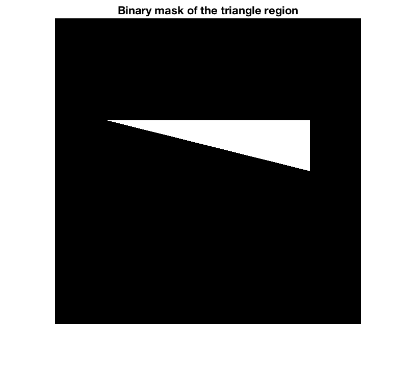
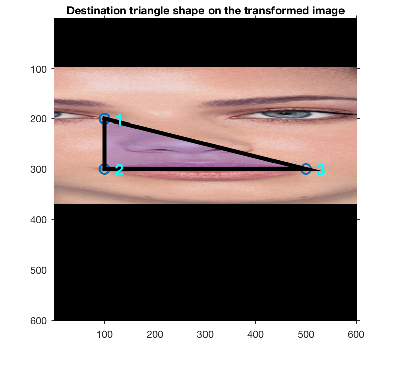
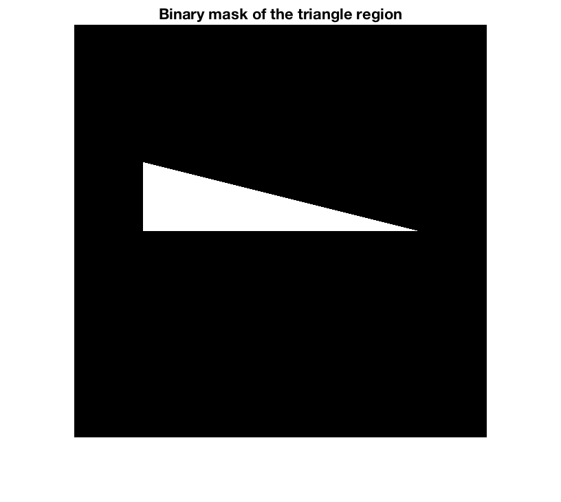
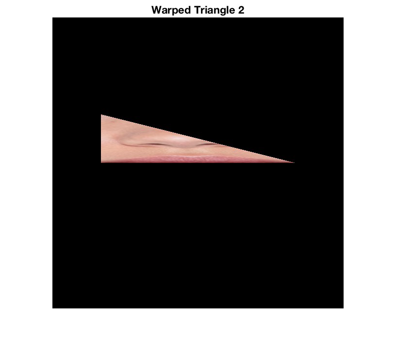
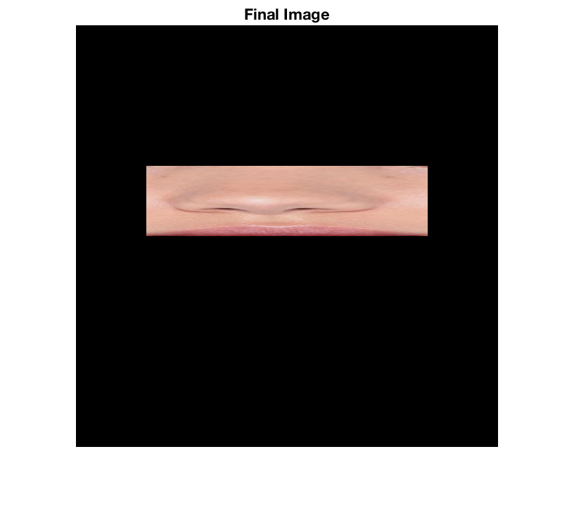

Contents
function tutorialAffineWarp
close all;
Affine warp
Example triangulation on a face image (i.e., source image)
% Display input image with superimposed triangulation female = imread('female.jpg'); figure; set(gcf, 'color','w'); set(gcf, 'Position', [0, 0, 200, 200]) imshow(female); title('Source image and triangulation'); drawnow; % Obtain triangulation tri = getTriangulationForSourceImage(); % Triangle colors just to show correspondence for this tutorial triColor = {'green', 'blue' }; % Draw triangles superimposed on image drawTriangulation(tri, triColor); drawnow;
Triangulation on the warped shape (i.e., destination shape)
This is the triangulation of the destination shape.
% Target shape tri_target = getTriangulationForDestinationImage(); % Display figure figure; set(gcf, 'color','w'); title('Target Shape (triangulated)'); set(gcf, 'Position', [0, 0, 200, 200]) axis([0, 600, 0, 600]) % Draw triangulation (no image to show) drawTriangulation(tri_target, triColor); axis ij; % Use the same coordinate system we use for image matrices. drawnow;
Calculate the warp for each triangle
For each triangle in the triangulation, we estimate the affine warp which we will apply to the source image. We then extract the triangular regions from the transformed image, and add each region incrementally to the destination image to obtain the final warped image.
% Create and initialize the destination image.
finalImage = uint8(zeros(600,600,3));
Calculate affine between source triangle and target triangle
for iTriangle = 1 : length(tri) % Estimate the transformation between two shapes. A = estimateAffineBetweenShapes(tri(iTriangle).x, tri(iTriangle).y, tri_target(iTriangle).x, tri_target(iTriangle).y); % Convert our transformation matrix to matlab's own transformation format. % Matlab functions that construct tforms expect the input matrix in % transpose form. tform = affine2d(A'); % This step applies the estimated affine warp to the source image. We % use "OutputView" to force the dimension of the transformed image to % be equal to that of the final destination image so we can just add % all the warps together (We can only add matrices of the same size). J = imwarp(female,tform,'OutputView',imref2d(size(finalImage))); % Here, we use the spatial reference information to position the % triangle on the correct location on the warped image. figure; imshow(J); % Plot polygon as a dashed line for visualization hold on; drawTriangle(tri_target(iTriangle).x, tri_target(iTriangle).y, triColor{iTriangle}); title('Destination triangle shape on the transformed image'); drawnow; % Calculate a binary mask of the region of interest - ROI (1=inside % region, 0=outside region). The ROI is created from the triangle % coordinates. BW = roipoly(J,tri_target(iTriangle).x,tri_target(iTriangle).y); figure, imshow(BW); title('Binary mask of the triangle region'); drawnow; % Create a 3-D mask (RGB). The original BW mask produced by the % previous step is 2-D. To mask a color image (i.e., RGB), we need a % 3-D mask. BW3 = false(size(J,1),size(J,2),3); % We need a logical matrix BW3(:,:,1) = BW; % Red component BW3(:,:,2) = BW; % Green component BW3(:,:,3) = BW; % Blue component % RGB image for storing the extracted warped region Imasked = zeros(size(J),class(J)); % Use the 3-D mask to get the pixel values from the RGB image Imasked(BW3) = J(BW3); % Mask works as indices for the pixels % Show the region figure; imshow(Imasked); title( sprintf('Warped Triangle %d', iTriangle) ); drawnow; % Increamentally add all warped triangles to form a single image with % all warped triangular regions. finalImage = finalImage + Imasked; snapnow; drawnow; end % Show the region figure; imshow(finalImage); title( 'Final Image' ); drawnow; return

function drawTriangle(x, y, c) % % Plot selected polygon as a dashed line for visualization hold on; %plot( tri(1).x, tri(1).y,'r+','LineWidth',2,'MarkerSize',10); plot( x, y,'o','LineWidth',2,'MarkerSize',10); patch( x, y,'o','EdgeColor','k','LineWidth',4,'MarkerSize',10,'FaceColor',c,'FaceAlpha',.2); drawnow; % Display corner labels for i = 1 : length( x ) text( x(i)+20, y(i), ... sprintf( '%d', i ), 'Color', 'c', 'FontSize', 16,'FontWeight', 'bold' ); end % Force drawing now drawnow; axis on; return function A = estimateAffineBetweenShapes(x1, y1, x2, y2)
% % Calculates affine between mean shape 1 and shape 2. % We assume that transformation is: A * (x1, y1, 1) = (x2, y2, 1). % % NumPairs = size(x1,2); % Number of pairs of points. M = zeros( 2*NumPairs, 6 ); % System matrix. j = 1; for i = 1 : NumPairs % Each pair of points yields two constraints M(j ,:) = [ x1(i) y1(i) 1 0 0 0 ]; j = j + 1; end for i = 1 : NumPairs % Each pair of points yields two constraints M(j ,:) = [ 0 0 0 x1(i) y1(i) 1 ]; j = j + 1; end M % Vector b in the least-squares equation b = [ x2'; y2' ] % Least-squares solution using matlab's \ operator a = M \ b
M =
226 240 1 0 0 0
346 238 1 0 0 0
380 470 1 0 0 0
0 0 0 226 240 1
0 0 0 346 238 1
0 0 0 380 470 1
b =
100
500
500
200
200
300
a =
3.3252
-0.4873
-534.5421
0.0072
0.4300
95.1842
M =
226 240 1 0 0 0
189 470 1 0 0 0
380 470 1 0 0 0
0 0 0 226 240 1
0 0 0 189 470 1
0 0 0 380 470 1
b =
100
100
500
200
300
300
a =
2.0942
0.3369
-454.1543
-0.0000
0.4348
95.6522
We re-construct the affine transformation matrix using the estimated values.
A = [ a(1) a(2) a(3); ... a(4) a(5) a(6); ... 0.0 0.0 1.0] return
A =
3.3252 -0.4873 -534.5421
0.0072 0.4300 95.1842
0 0 1.0000
  
A =
2.0942 0.3369 -454.1543
-0.0000 0.4348 95.6522
0 0 1.0000
    function tri = getTriangulationForSourceImage() % % This function provides a sample triangulation. % Here, triangulation consists of only two triangles. % % % vertex order % 1 2 3 tri(1).x = [ 226 346 380 ]; % Triangle 1 tri(1).y = [ 240 238 470 ]; % vertex order % 1 2 3 tri(2).x = [ 226 189 380]; % Triangle 2 tri(2).y = [ 240 470 470]; return function tri_target = getTriangulationForDestinationImage() % % This function provides a sample triangulation. % Here, triangulation consists of only two triangles. % % vertex order % 1 2 3 tri_target(1).x = [ 100 500 500 ]; % Triangle 1 tri_target(1).y = [ 200 200 300 ]; % vertex order % 1 2 3 tri_target(2).x = [ 100 100 500 ]; % Triangle 2 tri_target(2).y = [ 200 300 300 ]; return function drawTriangulation(tri, triColor) % % Draws the triangulation on top of an image for i = 1 : length(tri) drawTriangle(tri(i).x, tri(i).y, triColor{i}); end return